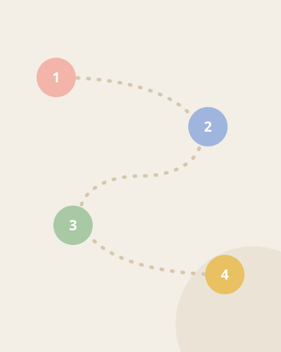
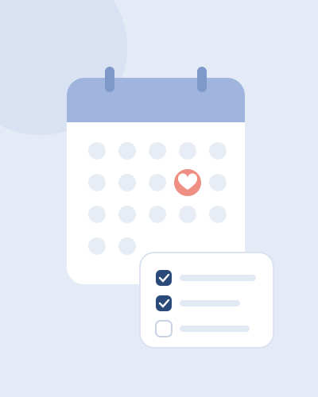
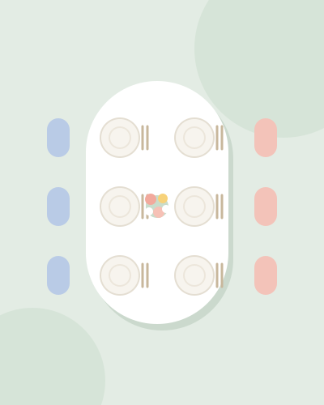
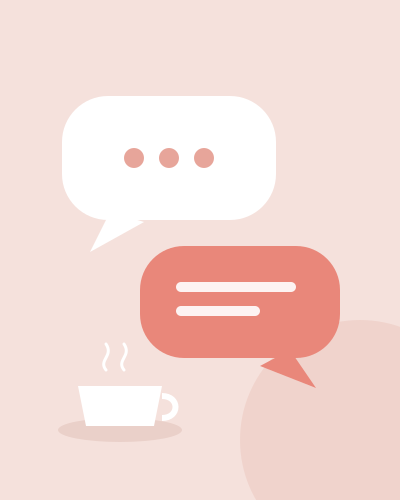
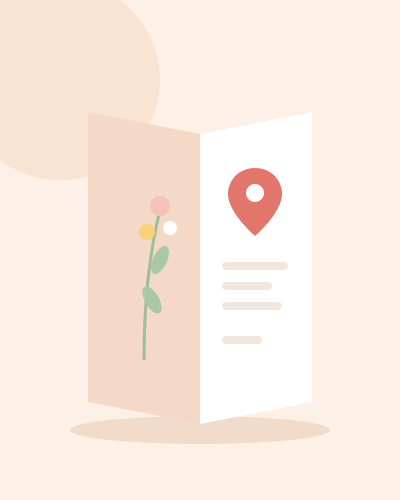

- 상견례 준비
- 가이드
- 상견례 순서와 진행
상견례 순서와 진행, 당일 흐름 정리
상견례는 식사를 포함해 보통 2시간 안팎이에요. 정해진 식순은 없지만, 예비부부가 진행자 역할을 맡아 흐름을 알고 들어가면 어른들도 편하게 따라오세요. 낮 12시 예약을 기준으로 시간대별 순서와 그때 쓸 말을 정리했어요.

시간대별 순서 한눈에 보기
| 시간 | 순서 | 예비부부가 할 일 |
|---|---|---|
| 11:30 | 예비부부 도착 | 룸, 자리, 메뉴 순서, 결제 방법 확인. 선물 둘 자리 정하기 |
| 11:50 | 부모님 맞이 | 각자 자기 부모님을 입구에서 맞아 룸으로 안내 |
| 12:00 | 첫인사와 착석 | 서서 인사를 나눈 뒤 자리 안내 |
| 12:05 | 가족 소개 | 예비신랑이 먼저, 이어서 예비신부가 자기 가족을 소개 |
| 12:15 | 식사 시작 | 어른이 수저를 드신 뒤 시작. 대화가 끊기지 않게 질문 던지기 |
| 13:20 | 예식 이야기 (선택) | 미리 양가와 맞춘 큰 방향만 꺼내기 |
| 13:30 | 계산 | 후식이 나오기 전에 자리를 비워 조용히 결제 |
| 13:40 | 선물 전달 (준비한 경우) | 양가가 같은 때에 주고받기 |
| 13:50 | 마무리 인사와 배웅 | 식당 입구나 주차장까지 배웅 |
| 저녁 | 감사 인사 | 상대 부모님께 짧은 감사 문자 보내기 |
저녁 6시 예약이라면 시간만 그대로 옮기면 돼요. 저녁 자리는 술이 곁들여지면서 길어지기 쉬우니 마무리 시점을 예비부부가 잡아 주세요.

단계별 진행과 쓸 말
1. 30분 일찍 도착해 자리 확인
예비부부는 둘이 함께 먼저 도착해요. 직원에게 예약자 이름을 말하고 아래를 확인하세요.
- 룸이 문을 닫을 수 있는 독립 공간인지, 예약 인원에 맞는 테이블인지
- 코스 음식이 나오는 순서와 대략 걸리는 시간
- 결제를 룸이 아닌 카운터에서 따로 할 수 있는지
- 선물과 외투를 둘 자리
자리를 미리 정해 두었다면 배치대로 앉으실 수 있게 기억해 두세요. 앉을 자리를 두고 서로 양보하다 보면 첫 분위기가 어수선해져요.

2. 맞이와 첫인사
각자 자기 부모님을 입구에서 맞아 룸으로 모셔요. 먼저 도착한 집안이 있으면 나중에 들어오는 쪽을 일어나서 맞이해요.
처음 뵙겠습니다. ○○○입니다. 바쁘신데 이렇게 시간 내주셔서 감사합니다.
아버님, 어머님 이쪽 안쪽으로 앉으시면 됩니다.
3. 가족 소개
소개는 각자 자기 가족을 해요. 보통 예비신랑이 먼저 자기 부모님을 신부 측에 소개하고, 이어서 예비신부가 소개해요. 이름과 관계만 말하기보다 성격이나 취미를 한마디 덧붙이면 대화거리가 생겨요.
저희 아버지, 어머니이십니다. 아버지는 주말마다 등산을 다니시고, 어머니는 요리를 좋아하세요. 오늘 형은 출장 때문에 함께 못 왔습니다.
저희 부모님이세요. 아버지는 말씀은 적으신데 정이 많으시고, 어머니는 오늘 뵙는다고 일주일 전부터 기대하셨어요.
4. 식사하며 대화 이어 가기
어른이 수저를 드신 뒤에 시작해요. 이 시간에 예비부부가 할 일은 대화가 한쪽으로 쏠리지 않게 질문을 던지는 거예요. 음식, 고향, 두 사람 어릴 적 이야기처럼 모두가 끼어들 수 있는 주제가 좋아요.
어머님, 여기가 갈비찜으로 유명하다고 해서 골랐는데 입에 맞으세요?
아버지, 저희 아버님도 등산 좋아하신대요. 주로 어느 산 다니세요?

5. 예식 이야기는 짧게
상견례 자리에서 날짜, 예식장, 예단을 모두 정하려고 하면 길어지고 부딪히기 쉬워요. 예비부부가 미리 양가에 따로 여쭤 맞춘 큰 방향만 확인하는 정도로 충분해요.
식은 내년 봄쯤으로 생각하고 있어요. 장소는 저희가 몇 군데 알아보고 다시 말씀드릴게요.
그 부분은 저희 둘이 두 분 말씀 듣고 정리해서 다시 여쭙겠습니다.
6. 계산은 조용히 먼저
후식이 나오기 전쯤 결제할 사람이 잠깐 자리를 비워 카운터에서 계산해요. 식사가 끝난 뒤 계산대 앞에서 서로 내겠다고 하면 어색해져요. 누가 낼지는 상견례 일주일 전까지 정해 두세요.
누가 내는 게 좋을지 고민된다면 상견례 비용, 누가 내야 할까를 참고하세요.
7. 선물 전달과 마무리 인사
선물을 준비했다면 식사가 끝나고 일어나기 전에 주고받아요. 한쪽만 준비하면 상대가 당황할 수 있으니, 할지 말지와 규모는 미리 맞춰 두세요.
약소하지만 저희가 준비했습니다. 드시고 건강하세요.
오늘 이렇게 뵙게 되어 정말 감사했습니다. 조심히 들어가세요.
식당 입구나 주차장까지 배웅하고, 차가 출발할 때까지 기다려요. 대중교통으로 오신 분이 있으면 미리 택시를 불러 두면 좋아요.
8. 그날 저녁 감사 인사
헤어진 뒤 그날 저녁, 예비신랑은 신부 부모님께, 예비신부는 신랑 부모님께 짧게 감사 문자를 보내요. 상황별 예시는 상견례 후 감사 인사와 문자 예시에 모아 두었어요.
이럴 땐 이렇게
한쪽이 늦을 때
늦는 쪽 예비부부가 먼저 와 계신 분들께 상황을 알리고, 식사는 모두 모인 뒤에 시작해요. 20분 넘게 늦어지면 차나 전채를 먼저 내 달라고 직원에게 부탁하세요.
죄송합니다. 길이 막혀서 10분 정도 늦으신다고 해요. 먼저 차 한잔 드시면서 기다리시겠어요?
예단, 집 같은 민감한 이야기가 나올 때
그 자리에서 결론을 내지 않아요. 이야기를 꺼낸 쪽의 자녀가 받아서 정리하면 상대 집안이 대답해야 하는 부담이 줄어요.
엄마, 그건 저희가 따로 정리해서 말씀드릴게요. 오늘은 맛있게 드시고 가요.
부모님 한 분만 오시거나, 인원이 다를 때
한부모 가정이거나 사정이 있어 한 분만 오시는 경우, 예비부부가 미리 상대 측에 알려 두면 당일에 묻는 일이 없어요. 형제자매 동반 여부도 미리 맞추되, 인원이 꼭 같을 필요는 없어요.
대화가 자꾸 끊길 때
준비해 간 질문을 하나씩 꺼내세요. 두 사람이 만난 이야기를 예비부부가 직접 들려 드리는 것도 좋아요. 가족 소개 PPT를 준비했다면 이때 보여 드려도 돼요.
당일 아침 확인할 것
- 식당 예약 시간과 예약자 이름, 인원을 한 번 더 확인했다
- 양가에 주소와 주차 안내를 보냈다
- 결제할 사람과 카드를 정했다
- 선물을 챙겼다 (준비한 경우)
- 주차 등록에 필요한 차량 번호를 알아 두었다
- 휴대폰을 무음으로 바꿨다
